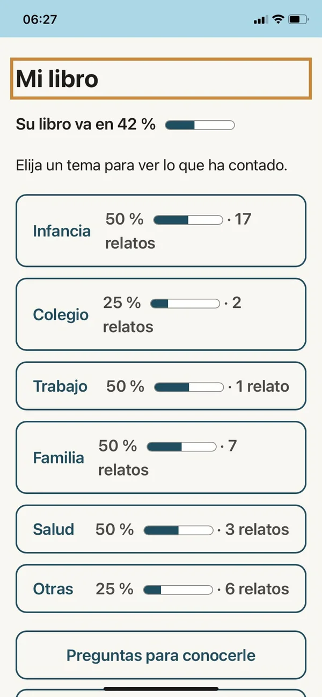
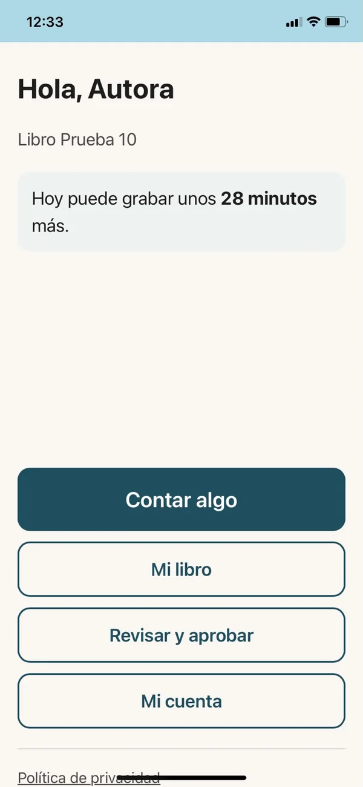

🎙️
Grabe sus relatos
Desde la aplicación en su teléfono, presione un botón y cuente. Audios breves, de unos cinco minutos, cuando usted quiera.
Cuente sus recuerdos hablando desde su teléfono, a su ritmo y en el orden que quiera. Nosotros los ordenamos y redactamos con ayuda de inteligencia artificial y de un editor, y usted revisa y aprueba cada capítulo. El resultado: un libro digital para conservar y compartir con su familia.
Sin escribir · Sin apuro · Nada se publica sin su aprobación


🎙️ Cuente hablando, sin escribir
🕰️ A su ritmo y en cualquier orden
✅ Usted aprueba cada capítulo
Un servicio pensado para personas mayores: pocos pasos, letra grande, botones amplios y ayuda siempre disponible.
Desde la aplicación en su teléfono, presione un botón y cuente. Audios breves, de unos cinco minutos, cuando usted quiera.
Por WhatsApp recibe la invitación, recordatorios amables y ayuda. Sin presiones: si un día no responde, no pasa nada.
No necesita contar todo en orden. Organizamos sus recuerdos por temas y capítulos: infancia, trabajo, familia, viajes…
La inteligencia artificial y un editor transforman sus audios en texto de libro, conservando su forma de hablar y sus hechos.
Cada capítulo se puede leer o escuchar en voz alta. Usted lo aprueba, lo corrige o pide un cambio hablando.
Con portada, índice, capítulos y fotografías si lo desea. En PDF y ePub, para guardar o compartir con un enlace familiar.
Pantallas simples, letra grande y un solo paso a la vez.
Al abrir la aplicación, lo primero que ve es un saludo y un botón grande: Contar algo. Desde ahí graba sus recuerdos cuando quiera.
En Mi libro aparece el avance total y el de cada tema: infancia, colegio, trabajo, familia… Usted elige por dónde seguir, sin un orden obligatorio.
Le escribimos por WhatsApp, explicamos el servicio con calma y hacemos una prueba de grabación juntos.
Elija el tema del día y grabe. Si quiere, le haremos una pregunta breve para recordar más detalles.
Lea o escuche cada capítulo ya redactado. Apruébelo, corríjalo o pida un cambio con su voz.
Reciba su libro digital y decida con quién compartirlo: solo para usted o con su familia.
“Cada persona mayor guarda una biblioteca de recuerdos. Nuestro trabajo es ayudarle a convertirla en un libro, con sus propias palabras.”
Muchas familias nos dicen: “siempre quise grabar las historias de mi mamá”. Sabios Relatos lo hace posible, sin que usted tenga que transcribir ni editar.
Regale a su padre, madre o abuelos la oportunidad de dejar su historia escrita para las próximas generaciones.
Puede ser su representante: ayudar a configurar el servicio y acompañarle, mientras la historia sigue siendo suya.
Basta un smartphone con WhatsApp, internet, micrófono y parlante. Si necesita ayuda al comienzo, también puede participar.
Estamos preparando el lanzamiento. Únase a la lista y le contaremos los precios y condiciones antes que a nadie.
Un solo pago, con acceso por 6 meses para contar su historia.
Para avanzar sin plazo fijo, mes a mes.
No. Usted cuenta sus recuerdos hablando, desde su teléfono. Nosotros nos encargamos de transcribir, ordenar y redactar. Si necesita ayuda para usar el teléfono, se la damos.
Un smartphone con WhatsApp actualizado, conexión a internet (Wi-Fi o datos), micrófono y parlante funcionando. Al comienzo hacemos juntos una prueba de grabación para asegurarnos de que todo funcione.
No. Puede contar lo que quiera, el día que quiera y en el orden que le nazca. Cada día elige un tema o capítulo, y el sistema organiza sus recuerdos aunque no recuerde fechas exactas.
Lo que usted quiera. Recomendamos audios de unos cinco minutos, pero también se aceptan más largos. Puede pausar, borrar el último audio y continuar otro día.
La IA convierte sus audios en texto, ordena los relatos y ayuda a redactarlos conservando su voz y sus hechos. Puede cometer errores, por eso un editor revisa el texto y usted siempre lo lee o escucha antes de aprobarlo. Nada pasa a su libro sin su aprobación.
Sí. En cada capítulo puede aprobar, editar el texto directamente o pedir un cambio hablando. También puede escuchar todo el texto en voz alta.
Sí. Puede aportar fotografías, cartas u otros recuerdos, y se incluirán en su libro si usted lo desea.
Para proteger su privacidad, el nombre de una persona fallecida se reemplaza automáticamente por un seudónimo. Si menciona a una persona viva, usted decide si usar un seudónimo, iniciales o mantenerla en anonimato. El libro incluye al inicio un aviso de que es una obra basada en sus memorias.
Su información se guarda con medidas de seguridad y acceso restringido, y solo la ve el equipo autorizado. Usted decide si su libro queda solo para usted o se comparte con su familia mediante un enlace. Los detalles están en nuestra política de privacidad.
Sí, en cualquier momento, sin explicar el motivo y sin ninguna consecuencia. Basta con avisarnos por WhatsApp (escrito o audio) o por correo, y le confirmaremos qué datos fueron eliminados.
Es natural. Puede no responder una pregunta, pedir una pausa o terminar la conversación cuando quiera. Sabios Relatos no es un servicio de emergencias, atención médica ni apoyo psicológico; si lo necesita, acuda a un profesional de confianza.
Sí. Un familiar puede actuar como su representante autorizado: le acompaña, ayuda a configurar el servicio y, si usted lo autoriza, puede aprobar en su nombre.
Déjenos su correo y le avisaremos cuando abramos los primeros cupos, con los precios y condiciones.